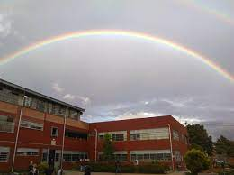

En el presente proyecto describiré mi vida a lo largo de estos 17 años, incluyendo mis mejores y peores momentos, los días en los que fui más feliz y en los que sentí que toqué fondo, las personas que me acompañaron a lo largo del tiempo, los que se quedaron y los que se fueron, mis gustos, mis metas, mi familia, y en especial mi proyección a futuro, en resumen, mí pasado, mi presente y mi futuro. Para mí es un placer presentarles este proyecto en el que me abro hacia el público y espero que se diviertan tanto como yo lo hice al escribirlo.
Nací el 26 de febrero de 2007, gracias a mi madre, Carolina Rodríguez Avendaño, y mi padre, Emiliano Suancha Rodríguez.
No tengo recuerdos de esta época por obvias razones; sin embargo, gracias a anécdotas de mis padres, sé dos cosas.
Aproximadamente a los 6 meses de gestación, mi madre sufrió una caída bastante peligrosa que le causó dolor y contracciones. Se trasladó inmediatamente a urgencias, donde le aplicaron una inyección que le
quitó los dolores e intentaba evitar mi llegada al mundo. Solo quedaba la esperanza de que funcionara, ¡y funcionó!
En total contraste con lo anterior, mi nacimiento fue postérmino, ocurriendo casi a los 10 meses. Los doctores recomendaron a mi madre, tras las 40 semanas, que se dirigiera al centro médico para estimular
mi nacimiento, lo que también funcionó.
Por obvias razones, estos años son muy borrosos en mi mente; solo existen algunos fragmentos algo sesgados por el paso de los años.
Como todo bebé y niño, mi tarea fue atormentar a mis padres "primerizos". A los dos años de edad, enfermé de algo llamado "fiebre interna", que mis padres no supieron tratar y casi muero antes de llegar
a urgencias. Quién diría que la cura era un baño frío y, tras esto, dormir. También recuerdo que tuve mi primer brote de dermatitis, la cual convirtió mi piel en una de carácter sensible al sol, químicos
fuertes, grasas y azúcares, por lo que desde niño debo tener muchos cuidados para evitar estos deterioros.
Entre mis recuerdos están momentos que reflejan la relación que tenía con mis primos, en un inicio muy caótica, agresiva e impulsiva. Interacciones en donde siempre salí mal parado por diferencia de edad
o también por la típica enseñanza de que "a una mujer no se le pega", desde la cual mis primas se aprovechaban. Mis padres decidieron dejar que esas situaciones evolucionaran sin intervención, ya que por
recomendaciones de una profesora de mi infancia (de la cual hablaré más adelante), "en algún momento debería despertar", y así fue. En algún momento entre los 4 y los 5 años pasaron dos cosas esenciales
para cambiar esta situación. Por un motivo sin actual importancia, empezó un conflicto con mi primo que, naturalmente, escaló hasta llegar a los golpes. Lo que terminó esa pelea infantil fue mi accionar
que "sobrepasó el límite"; tomé un palo de escoba con rabia y lo usé para golpear a mi primo. Algo similar pasó con mi prima de casi igual edad, pero en vez de golpearla con una escoba, lo que hice fue
jalarle el cabello, morderla y golpearla, como ella hizo durante mucho tiempo. Tras estos sucesos, las cosas se calmaron, creando paz.
Ahora, la profesora que mencioné anteriormente, no sé su nombre ni estado actual; solo sé que existió en mi infancia. Pero, ¿por qué daría ella un consejo así a mis padres? En parvulitos, tuve problemas
con un compañero llamado "Dave", que al igual que mis primos arremetió constantemente contra mi persona. Hubo incluso reunión de padres, donde la profesora dijo aquellas palabras, y la situación se repitió
un poco más hasta que un día, sin previo aviso, ataqué a este compañero golpeándolo contra la mesa hasta que la docente me detuvo. Tras el incidente, hubo otra reunión en la que se me felicitó por no
dejarme de los demás y se me aconsejó solo ser violento en defensa propia. Algo cómico es que tras ese incidente, Dave se hizo mi amigo.
Y tuve un conejo que, por cuestiones económicas, tuvimos que relegar al dueño de la casa, que resultó ser todo un sádico. Lo hizo caldo y lo dio como almuerzo a todos nosotros.


Esta fue una época de muchos cambios en mi vida. Me mudé muy lejos de mi hogar por causas que en su momento no entendía, pero ahora entiendo que fue lo mejor.
La nueva casa era grande, su infraestructura se encontraba en obra gris. No conocía nada ni a nadie, más que a mis tías y primos. Me inscribí en mi colegio actual, solo que en sede y jornada totalmente
opuestas (Sede B, Tarde). Ahí, con la ayuda de mis primos, ya que soy muy tímido, conseguí amigos. Me adelantaron un curso, y ahora estaba en primero de primaria. Durante el paso del tiempo, viví muchas
cosas: amores infantiles, amistades, peleas y demás cosas que me hicieron crecer como persona. Cometí muchos errores, de los cuales me arrepiento actualmente. Estos errores, a veces, me quitan el sueño,
ya que nunca fui ni seré capaz de repararlos.
Cosas a destacar son que me gustaba estudiar. Era divertido y muy entretenido. Disfrutaba de mis amigos sin preocuparme por qué cosas me esperarían en el futuro. Siempre me destacé por ser buen estudiante,
recibiendo casi todas las menciones de honor en mi graduación de quinto de primaria, de lo cual mis padres están orgullosos. Pero, aun así, sentía algo extraño. Mientras todos se alegraban, algunos
lloraban; a mí no me importaba nada de eso, ni la ceremonia, ni las menciones de honor, ni las felicitaciones. No me importaba mucho esa cuestión.
Cosas que pasaron durante este tiempo: mis tías tuvieron más hijos, la familia se hacía más grande pero al mismo tiempo más desunida, ya que cada quien buscó el beneficio para su familia cercana. Mi prima
se trasladó junto con sus hermanos a la mañana de mi misma sede, lo cual nos separó mucho. Luego, se mudó a Boyacá, por lo que la comunicación desde ahí es casi nula. Mi primo y su hermanastra siempre
tuvieron problemas con su madre, mi madrina, por lo que se fueron de casa antes de lo recomendable, lo que, a mi parecer, los hizo pasar por cosas muy evitables.
Adoptamos una pareja de perros, supongo que para evitar mi soledad: “Max” y “Quiara”. Lamentablemente, ambos sufrieron una infección estomacal, de la cual solo Max sobrevivió. Así que éramos Max y yo
contra el mundo, o eso pensé, ya que unos 3 años después Max murió. Un vecino le dio carne con vidrio molido, ya que este era muy ruidoso, y mi felicidad acabó por un tiempo. Ambos pudieron ser salvados
si no fuera porque la única veterinaria del sector es una porquería.
Creí estar solo hasta que recibí la noticia de que mi madre estaba embarazada. Me emocioné mucho, ya que siempre quise un hermano menor. Mi madre, al igual que conmigo, sufrió una caída que casi la
hace perder a mi hermana. Ella, junto con mi padre, se fueron directamente al hospital dejándome solo en casa esa noche, pensando que mi hermana había muerto. Lloré hasta quedar dormido. No pasó nada
más que el susto, y unos meses después, mi hermana nació. Cuando la vi por primera vez, no pude evitar sonreír. Verla dar sus primeros pasos, decir mi nombre, cantarme canciones con una guitarra de juguete
y esos momentos de alegría me llenaron el alma. Ella le da sentido a mi vida actualmente, es lo único que separa mi mente de la locura. Aunque entre más pasa el tiempo, el abismo entre nosotros se hace
más y más grande.
Hubo otro suceso esencial para mí: la adopción de un gato llamado “Juguete”, un acompañante que para mí representó y representa mucho.
Siendo realistas, aquí se acabó la magia. Han ocurrido muchas cosas, principalmente malas. El "desarrollo de personaje" ha sido mucho mayor de lo que pensé.
Puedo resaltar 8 cosas principales:
Este es mi genograma, pese a lo corto tiene un poco de historia.
Mi padre es uno de cuatro hijos entre sus padres, y una que no tuve en cuenta ya que no
es hija de Suancha y Rodriguez, no tengo mucha información de ellos, no sé quién es mayor ni el
menor, nunca me relacione con ellos; poco antes de tenerme, Emiliano Suancha mantenia una
relación con Cindy Carranza, relación que dio como fruto a mi hermano mayor, quien es mi mejor amigo (2005).
Mi madre es hija de una relacion entre Rodriguez y Avendaño, tuvo dos hijos con mi padre (Suancha), mi hermana menor ,
Sara Suancha en 2016 y yo, Duvan Suancha en 2007.
Mi relacion familiar se limita solo a mis padres, hermanos y abuela materna. El resto de mi familia se ha
separado a lo largo del tiempo.
En mi percepción esta cancion representa el proceso de un individuo que se aleja de aquellas cosas y personas que no son beneficiosas, que hieren o lastima a dicho individuo, mostrandonos los deseos de querer olvidar las emociones que esas interraciones nos generan y la abstinencia que la ausencia de estas crea.
Dentro de los primero versos se encuentra la fuente principal del significado de esta cancion para mi,
"La vida es una viaje no una estación
Saca tu memoria de esa prisión
Se que hay bonitos recuerdos pero no es de cuerdos tener recuerdos por obsesión
El tiempo aquí es como el pantalón de un niñito
Bien cortico y repleto de caca
Empaca tus sentimientos y llévalos en un bolsito
Hasta que el tiempo te diga donde se sacan
La vida es una viaje no una estación
Saca tu memoria de esa prisión
Tu vida es una película que ahorita es que comienza
Así que luces cámara y acción"
Mi inferencia respecto a esto es que no nos podemos quedar atascados en un pasado que no existe mas que en nuestra memoria, debemos seguir viviendo y aprendiendo, siempre creciendo
y apuntando a ser mejor.
En total constraste con todo lo anterior, esta canción me trae a los momentos pasados, es como una pastilla para no olvidar, supongo que es para justificar eso de "El que no conoce su historia está condenado a repetirla" (Frase de: Jorge Ruiz de Santayana).
Tengamos en cuenta que estas canciones me traen nostalgia, por ende deben ir arraigadas a un pasado, en el cual, pienso de vez en cuando. En este caso es una canción que me trae a la mente una persona que representa mucho para mi, una persona con la que lastimosamente no tengo contacto actualmente, pero tengo en cuentaz que es lo mejor. SIGUEINTE CANCIÓN
Un golpe total de recuerdos de niño, mi padre fue aquel que me inculco este gusto por Dragon ball, el cual hasta hoy se mantiene. Es emoción, alegría y extasis lo que recorre por mi cuerpo, una total descarga de endorfina y serotonina en mi cerebro, que buen tema.
Esta, junto con las siguientes 3 canciones, son alusivas a los momentos que pasé con mi hermano, principalmente juganddo videojuegos. Proviene de un videojuego llamado Dark Souls, en el cual pasamos muchas horas juntos. esta canción en especifico suena cuando inicia la batalla contra el último jefe del primer videojuego de la saga.
Esta canción proviene de una adaptacion echa para el videojuego "Guitar Hero lll", es la batalla contra el jefe final, y aunque ninguno de los dos pudo nunca vencerlo en su máxima dificultad fue increible la primera vez que lo vencimos.
Es la última canción del Guitar Hero lll, recuerdo que sonó automaticamente despúes de la derrota dej jefe final, nos tomo por sorpresa pero aun asi al primer intento ambos logramos completarla.
Esta cancion proviene de Guears of War, mas precisamente de Guears of War 3, suena tras la muerte de uno de los personajes mas importantes del videojuego, recuerdo cuando lo vi con mi hermano por primera vez, fue impactante ya que es un personaje muy querido por nosotros.
Me encantaria agregar mas, ya que son muchas las canciones que representan algo para mi, que traen a mi recuerdos tristes, alegres. Momentos claves o lugares importantes en mi desarrollo como persona y ser humano, pero creo que con esto es mas que suficiente para mostrar un poco lo que es mi pasado. Algo que me parece muy extraño es que ninguna cancion evoca a la relacion que tengo con mi hermana menor, pese a lo mucho que significa para mi, creo que esto es por la brecha generacional tan amplia que hay entre nosotros, donde nuestros gustos difieren casi todo el tiempo, lo que imposibilita un poco una coneccion músical destacable, espero que en un futuro pueda relacionarme mas con ella por este medio.
Antes de si quiera promover ideas a futuro deberia crear una relacion entre mis caracteristicas y como explotarlas, dentro de las cuales están:
Además de la música, tengo otros gustos como la cocina, pasando mas a lo académico, tengo preferencia por las Ciencias Naturales (Fisica, Quimica, Biologia), un gusto por los numeros representado en la Economía y el Calculo, por ultimola Filosófia, dentro de estas areas es la que quiza menos he desarrollado de manera consiente. Estos gustos generan una mayor dedicacion al aprendizaje de las asignaturas escolares relacionadas con estas.
Relacionado con lo anterior, en mi ultimo boletín escolar recibido hasta la fecha (25/03/2024), se puede recalcar mi excelencia en la fisica y Calculo, lo que reafirma mi gusto por los números y la piedra angular de lo que quiero ser a nivel profesional.
Podria extenderme parrafos y parrafos como ya lo he echo en otras ocaciones, explicando como es un milagro que exista, que aun este vivo, que pueda interactuar con la realidad y un monton de cosas mas.
es una pregunta bastante complicada y fue la primera pregunta que se me fue planteada hace poco mas de un año, mi respuesta no varia mucho a la que di en aque entonces, debemos ebtebder que esta pregunta
no se refiere a mis caracteristicas, se refiere a mi esencia, que me hace único e invaluable, llendo a la respuesta: "Soy el producto de mi pasado, el creador de mi futuro, soy un ser imperfecto de la casualidad,
todo esto me hace diferente y único, porque en la eternidad del tiempo será casi imposible que exista alguien que haya experimentado mi vida tal cual la vivo, viví y viviré".
En vez de explicar mi respuesta, me gustaria que el lector cree su propia respuesta teniendo en cuenta las siguientes pregntas desde la perpectiva del "YO PROPIO": ¿Por qué soy producto de ni pasado?,
¿Comó influye el pasado en mi presente y futuro?,
¿Por qué soy producto de la casualidad?, ¿Es el tiempo infinito? y por último ¿Realmente todo lo anterior me hace especial?.
El presente proyecto es dedicado principalmente a mi familia, ya que me han apoyado desde el principio de mi vida, en especial a mi madre, mi padre y mi abuela materna, que me han apoyado desde siempre; también quiero dar una dedicación especial a mis hermanos que sin duda alguna me han ayudado a llegar donde estoy, me han ayudado en mis momentos tristes y más difíciles, nunca me dejaron solos y por tal motivo merecen una nominación especial; así mismo unos profesores también merecen una nominación: Jorge Carrascal, quien fue el docente encargado de mi hasta grado 10mo; Liliana y Paula, quienes fueron mis profesoras de matemáticas y física, respectivamente, me enseñaron que estas materias son más que son números, me dio una meta, una razón de ser, me dio el porqué de seguir; Nadua, que fue mi profesora de química, el me dio el inicio de la química, me enseño las bases que hoy conforman gran parte de mi saber. Me encantaria agraecer tambien a los demas docentes que me han guiado ya que, aunque sus nombres no estan aqui, tengo en cuenta que sin su aporte no seria quien soy hoy.
| Numero de celular | ||
| 3212869312 | 3222606886 | |
| Correo electrónico | ||
| suancharodriguezd@gmail.com | duvana.suancha657@educacionbogota.edu.co |